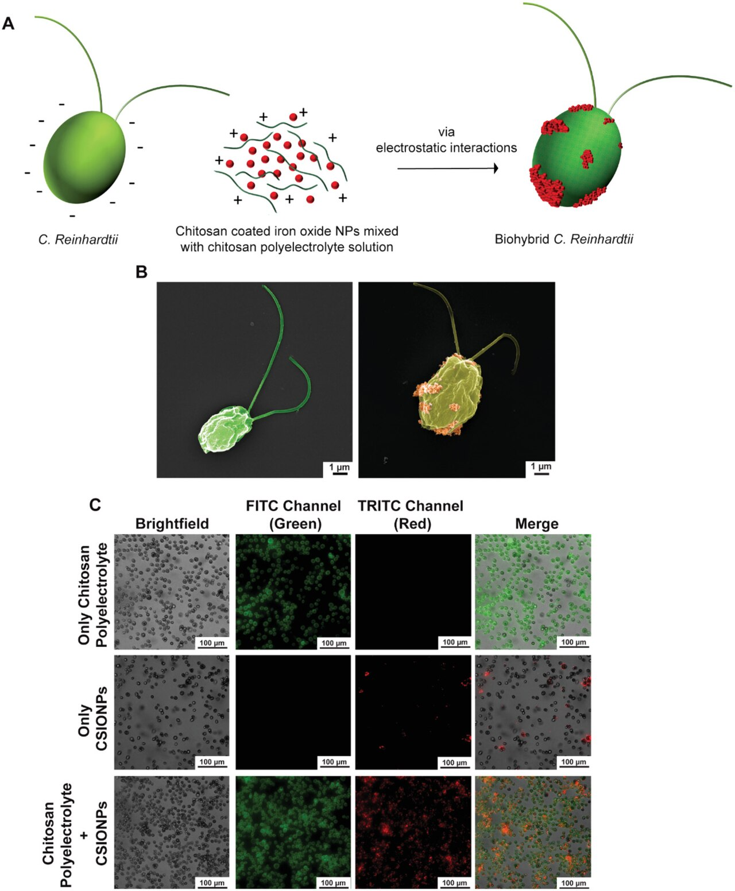
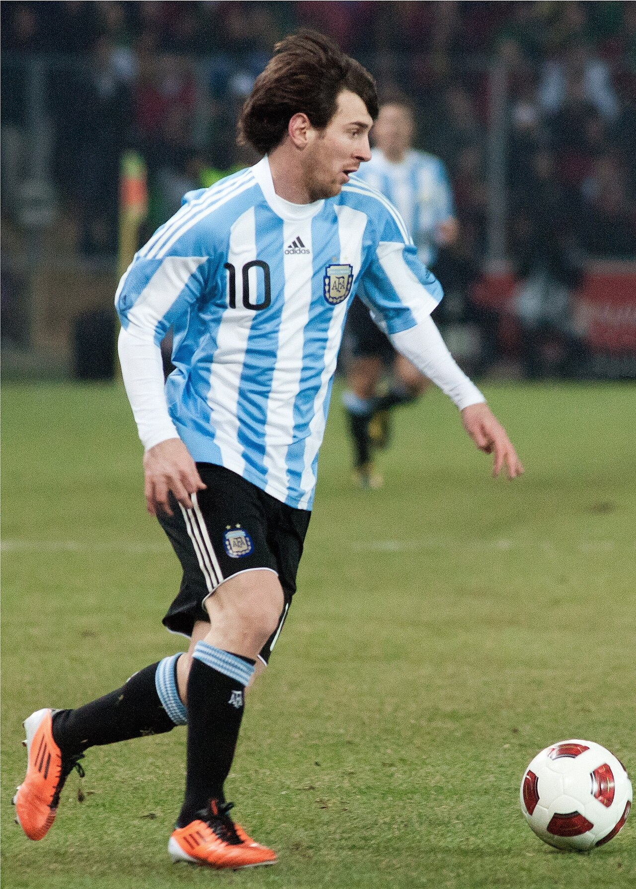
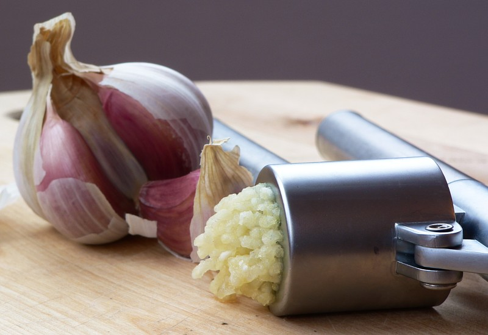
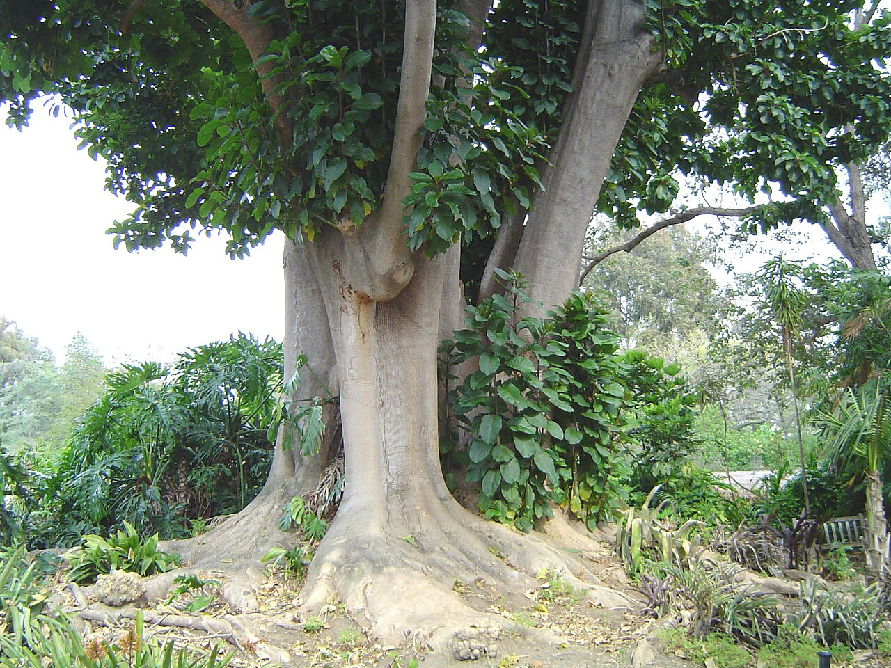
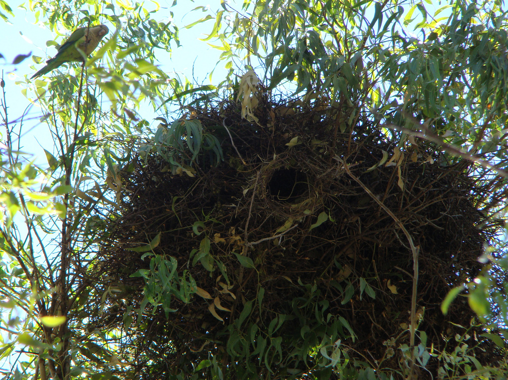
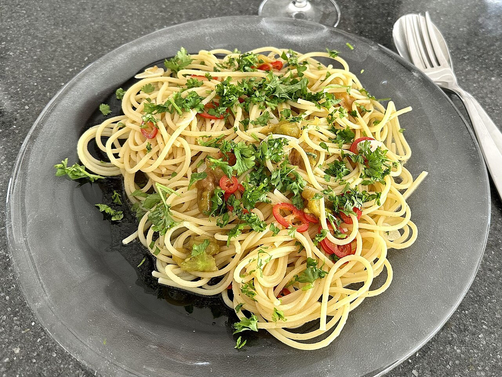
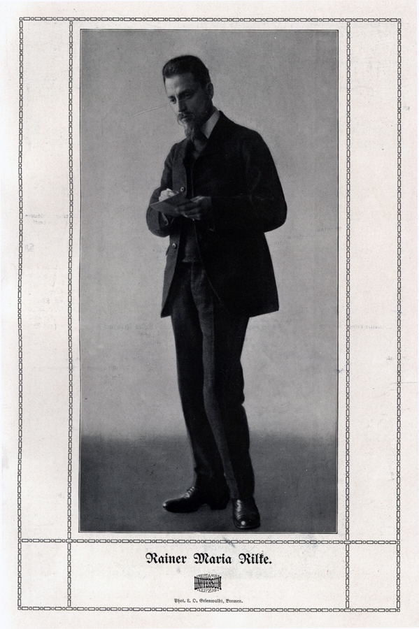
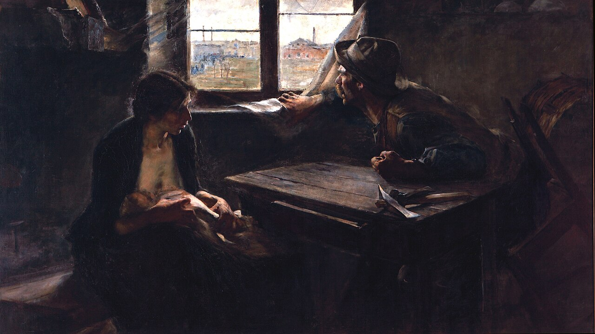
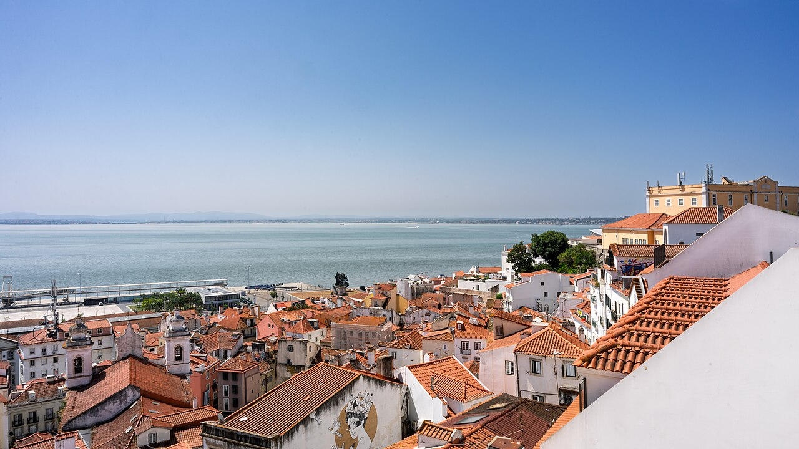

diario de la mañana — el mundo, tu ciudad y lo que te asombra
Nº 5Lunes 5 de octubre de 2026Buenos Aires≈ 35 min de lectura

Tapa: una pintura de la colección del Museo Nacional de Bellas Artes, que cumple 130 años. Hoy es lunes de arte. Foto: Jacob Cornelisz van Oostsanen · Public domain · Wikimedia CommonsLunes de arte
Buen día. Arranca la semana con dos noticias grandes: hace un rato, en Estocolmo, le dieron el Nobel de Medicina a la optogenética, una técnica que seguro viste en la carrera. Y Brasil amaneció con una sorpresa: Flávio Bolsonaro le ganó la primera vuelta a Lula. Hoy además es lunes de arte, con una de las pinturas más famosas del Bellas Artes, y empieza la semana 2 de francés: los números y la hora.
14° / 22°Templado y sin lluvia. Tarde mayormente nublada, viento suave del norte y del nordeste. El día más lindo de la semana hasta ahora.
BrasilFlávio Bolsonaro gana la primera vuelta; el 25 de octubre se define
La urna electrónica brasileña, que permite tener resultados en horas. Foto: Superior Electoral Court of Brazil · Public domain · Wikimedia Commons
Contra lo que decían todas las encuestas, el senador Flávio Bolsonaro terminó primero, con alrededor del 47 % de los votos válidos, contra cerca del 45 % de Lula, según el Tribunal Superior Electoral: unos tres millones de votos de diferencia sobre más de 55 millones para el ganador. Como nadie superó el 50 %, habrá balotaje el 25 de octubre. Milei celebró: «la libertad avanza en Brasil».
Por qué importa: las encuestas daban a Lula cuatro o cinco puntos arriba y fallaron por casi siete. Eso reabre el debate sobre cómo se mide el voto, y deja a Lula con tres semanas para dar vuelta una elección en la que llega segundo. Para la Argentina, un Brasil gobernado por un aliado ideológico de Milei cambiaría el Mercosur. Lo seguimos en inglés en el English corner.
Ucrania · AlemaniaAtaque a Kiev durante la visita de Merz
Rusia bombardeó Kiev mientras el canciller alemán, Friedrich Merz, estaba de visita en la capital ucraniana. Fue una señal directa al principal sostén económico europeo de Ucrania.
EspañaInundaciones en Cataluña
Las lluvias intensas provocaron inundaciones en toda Cataluña: los bomberos atendieron más de 1.500 llamados y hay dos muertos y un desaparecido. En la isla griega de Creta, cinco días de lluvias dejaron daños fuertes. Es el mismo patrón que en Tailandia: lluvias extremas concentradas en pocos días.
FilipinasEl mayor operativo contra los casinos online ilegales
Las autoridades detuvieron a 244 extranjeros, en su mayoría chinos, en el mayor operativo hasta ahora contra los POGO (operadores de juego online con licencia filipina para apostadores de China). Estas redes están asociadas a estafas digitales, trata de personas y lavado de dinero.
PakistánGuterres, en busca de una mediación entre Estados Unidos e Irán
El secretario general de la ONU viaja a Islamabad para reunirse con el gobierno pakistaní, que se ofreció como canal entre Washington y Teherán en medio de la guerra y de los ataques en Ormuz.
Argentina y Buenos Aires no vivir adentro de un táper
Mañana se despide Messi
El último partido de Messi con la Selección

Lionel Messi con la camiseta de la Selección. Foto: Lionel Messi – Portugal vs. Argentina, 9th February 2011.… · CC BY-SA 3.0 · Wikimedia Commons
Mañana, martes 6, a las 20, en el Monumental, Messi juega su partido despedida de la Selección, contra Benín. Será su partido número 208 con la camiseta argentina, después de anunciar en agosto su retiro del equipo nacional. Viene de un 7-0 a Burkina Faso, en un partido que jugó sin él.
Malvinas: corre el plazo
A fines de la semana que viene vencen las dos semanas que la Argentina le dio al Reino Unido para frenar el proyecto petrolero Sea Lion. Si no hay respuesta, el Gobierno irá al Tribunal Internacional del Derecho del Mar.
Para hacer en la ciudad
Museo Nacional de Bellas Artes (Av. del Libertador 1473), entrada gratis, de martes a domingo: cumple 130 años y tiene una obra encargada para la ocasión, Código natal: los orígenes cósmicos del Museo, de Adriana Bustos. Abajo te cuento qué mirar en la sala de arte argentino del siglo XIX.
Mafalda Inmersiva en el Recoleta: de martes a viernes, al mediodía es más barata.
Sala Lugones: último tramo del ciclo Wajda, hasta el 14.
Ciencia nivel colega
Nobel de Medicina 2026: Hegemann, Nagel y Deisseroth, por la optogenética
El Instituto Karolinska premió a Peter Hegemann, Georg Nagel y Karl Deisseroth «por sus descubrimientos sobre canales iónicos activados por luz y la optogenética»: un método para encender o apagar neuronas definidas genéticamente con luz, con precisión de milisegundos, en el cerebro vivo.
De un alga a un interruptor neuronal
El organismo:Chlamydomonas reinhardtii, un alga verde unicelular que nada hacia la luz gracias a un «ojo» (el estigma) con fotorreceptores de tipo rodopsina.
El descubrimiento (Nagel, Hegemann y col., 2002–2003): la canalrodopsina no es un receptor que active una cascada, sino un canal catiónico activado directamente por luz. Su cromóforo es el retinal, unido covalentemente a una lisina por una base de Schiff; al absorber luz azul (unos 470 nm), el all-trans-retinal se isomeriza a 13-cis y el canal se abre. Lo demostraron expresando la ChR2 en ovocitos de Xenopus y en células HEK293 y midiendo fotocorrientes.
El salto a la neurociencia (Deisseroth, Boyden y col., 2005): expresaron ChR2 en neuronas de hipocampo en cultivo con un vector lentiviral y lograron disparar potenciales de acción con pulsos de luz de milisegundos. Las neuronas de mamífero ya tienen retinal suficiente, así que no hizo falta agregar cofactor.
La caja de herramientas: después llegaron canales y bombas inhibitorios (la halorrodopsina NpHR, una bomba de Cl⁻ activada por luz amarilla), variantes desplazadas al rojo (Chrimson) para tejido profundo y el uso de promotores específicos y del sistema Cre-lox para expresar el canal solo en un tipo celular definido.
Por qué cambió todo, y sus límites
Causalidad: antes, la neurociencia sobre todo correlacionaba actividad con conducta. Con optogenética se puede probar que activar o silenciar una población concreta causa una conducta (miedo, memoria, recompensa).
Clínica: en 2021, un paciente con retinitis pigmentosa recuperó visión parcial con terapia génica que expresaba una opsina (ChrimsonR) en las células ganglionares de la retina, más unas gafas que proyectaban luz ámbar (Sahel y col., Nature Medicine). Es el primer uso terapéutico en humanos.
Límites: exige terapia génica (vectores AAV, inmunogenicidad, dosis), llevar luz al tejido profundo (fibras ópticas implantadas) y calentamiento del tejido. En humanos, el uso sigue siendo excepcional.
Para tu formación: es un ejemplo perfecto de cómo la ciencia básica «inútil» (¿cómo ve un alga?) termina en una herramienta biotecnológica que transforma un campo entero.
Karolinska Institutet: anuncio del Nobel · Nagel G y col., «Channelrhodopsin-2, a directly light-gated cation-selective membrane channel», PNAS 100, 13940 (2003), doi:10.1073/pnas.1936192100 · Boyden ES, … Deisseroth K, «Millisecond-timescale, genetically targeted optical control of neural activity», Nat Neurosci 8, 1263 (2005), doi:10.1038/nn1525
Biotec en el mundo real · ARN mensajero hecho en Garín
En 2021, la OMS y la OPS eligieron a Sinergium Biotech (Garín) como uno de los 15 centros del mundo para recibir la transferencia de la tecnología de vacunas de ARNm, la de Pfizer y Moderna. La empresa ya desarrolló candidatas contra la gripe aviar H5N1 y construye una planta para escalar vacunas y terapias de ARNm.
Producción del ARNm:transcripción in vitro (IVT) con ARN polimerasa T7 a partir de un ADN molde linealizado; cap en 5′ (cotranscripcional, tipo Cap1) y cola de poli(A). Se reemplaza la uridina por N1-metilpseudouridina para reducir el reconocimiento por receptores innatos (TLR7/8, RIG-I) y aumentar la traducción.
Purificación: hay que eliminar el ARN doble cadena, un subproducto de la IVT que es muy inmunoestimulante, además de enzimas y molde de ADN.
Formulación:nanopartículas lipídicas (LNP) con cuatro componentes (lípido ionizable, fosfolípido DSPC, colesterol y lípido-PEG) armadas por mezcla microfluídica.
La ventaja estratégica: cambiar el antígeno es cambiar una secuencia, sin rehacer el proceso. Eso permite responder en semanas a una pandemia (por ejemplo, a la H5N1).
Ciencia en la vida cotidiana · Por qué el ajo pica (y por qué conviene picarlo antes)

Un diente de ajo entero casi no tiene olor; al romperlo empieza la química. Foto: Lee Kindness · CC BY 2.5 · Wikimedia Commons
En el diente de ajo entero, la aliína (un sulfóxido de cisteína) y la enzima aliinasa están en compartimentos celulares separados. Al cortarlo o pisarlo se mezclan, y en segundos se forma alicina (un tiosulfinato), responsable del olor y del picor. La alicina activa los canales TRPA1 y TRPV1 de las terminales nerviosas, los mismos que responden al wasabi y al calor.
El truco: la aliinasa se desnaturaliza con el calor. Si picás el ajo y lo dejás reposar unos minutos antes de cocinarlo, se forma más alicina. Si lo tirás entero a la sartén, la enzima se inactiva antes de actuar. La alicina es además inestable: se transforma en dialil disulfuro y otros compuestos, que son el aroma del ajo cocido.
Mirá a tu alrededor árbol y ave de la semana
El ombú, que no es árbol, y las cotorras, que construyen edificios

Un ombú, con su tronco enorme. Foto: en:User:Geographer of the english Wikipedia · CC BY 1.0 · Wikimedia Commons

Cotorras en su nido comunitario. Foto: Cláudio Timm · CC BY 2.0 · Wikimedia Commons
El «árbol»: ombú
Nombre científico
Phytolacca dioica (Fitolacáceas)
La sorpresa
Técnicamente es una hierba gigante: su tronco no forma madera verdadera, sino un tejido blando y esponjoso que almacena agua. Por eso resiste la sequía y el fuego, y no sirve para leña.
Dónde verlo
Hay ombúes enormes en la Plaza San Martín, en Retiro, y en los bosques de Palermo. (Ojo: el árbol gigante de la Recoleta no es un ombú, es un gomero.)
Dato
Es dioico: hay plantas macho y plantas hembra. Su savia es tóxica, por eso el ganado no lo come.
El ave: cotorra
Nombre científico
Myiopsitta monachus (Psitácidos)
Cómo reconocerla
Verde, con la frente y el pecho grises, unos 29 cm, y muy ruidosa. Vuela en grupos chillando.
Su particularidad
Es el único loro del mundo que construye nidos de ramas: nidos comunitarios enormes, con varias «habitaciones», en árboles altos, torres de luz y antenas. Ahora, en primavera, es plena época de reproducción.
Tu misión de hoy
Receta de estación lunes rápido · con su química
Spaghetti aglio, olio e peperoncino
La pasta de la medianoche italiana: cuatro ingredientes y quince minutos. Hoy, toda la química del ajo en acción.

Spaghetti aglio, olio e peperoncino. Foto: Bairuilong · CC BY-SA 4.0 · Wikimedia Commons
Ingredientes (1 porción)
120 g de spaghetti
3 dientes de ajo
4 cucharadas de aceite de oliva
Ají molido o un ají fresco
Perejil y sal
Pasos
Fileteá el ajo y dejalo reposar 10 minutos (ver «ciencia cotidiana»).
Herví la pasta en agua con sal. Guardá una taza del agua de cocción.
En una sartén, aceite tibio con el ajo y el ají, a fuego bajo, hasta que el ajo apenas se dore. Si se quema, amarga.
Pasá la pasta a la sartén con medio cucharón del agua de cocción y saltá un minuto revolviendo fuerte: se forma una salsa cremosa.
Perejil picado y listo.
La química de la receta
La salsa sin crema: el agua de cocción tiene almidón disuelto (amilosa que salió de la pasta). Al agitarla con el aceite, el almidón actúa como estabilizante y forma una emulsión de aceite en agua. Por eso la salsa queda brillante y se pega a la pasta.
El picante del ají: la capsaicina activa el receptor TRPV1, el mismo que detecta el calor real por encima de unos 43 °C. Por eso el ají «quema». Es liposoluble: se extrae en el aceite, y el agua no lo calma, pero la leche sí (la caseína la arrastra).
Un clásico en cinco minutos literatura universal
Rainer Maria Rilke, Cartas a un joven poeta (1929)
Para una semana de cierre de carrera: la primera carta, de 1903. Traducción nuestra del alemán, abreviada.

Rainer Maria Rilke. Foto: Ludwig Oskar Grienwaldt (aktiv 1862-1901) · Public domain · Wikimedia Commons
Usted me pregunta si sus versos son buenos. Me lo pregunta a mí. Antes se lo preguntó a otros. Los manda a revistas. Los compara con otros poemas, y se inquieta cuando ciertas redacciones rechazan sus intentos.
Ahora (ya que me permitió aconsejarlo) le pido que deje todo eso. Usted mira hacia afuera, y eso es lo que sobre todo no debería hacer ahora. Nadie puede aconsejarlo ni ayudarlo, nadie. Hay un único medio: entre en usted mismo. Busque la razón que lo impulsa a escribir; fíjese si extiende sus raíces hasta el lugar más hondo de su corazón; confiésese si moriría si le prohibieran escribir.
Esto, sobre todo: pregúntese en la hora más silenciosa de su noche: ¿debo escribir? Excave en busca de una respuesta profunda. Y si es afirmativa, si puede responder a esa pregunta seria con un fuerte y simple «debo», entonces construya su vida según esa necesidad.
«Nadie puede aconsejarlo ni ayudarlo, nadie».
Para entrar al texto
El destinatario: Franz Xaver Kappus, un cadete militar de 19 años que le escribió a Rilke pidiéndole opinión sobre sus poemas. Rilke le respondió diez cartas entre 1903 y 1908, y Kappus las publicó en 1929, después de la muerte del poeta.
Por qué se sigue leyendo: no habla de técnica poética sino de vocación, soledad y paciencia. Funciona igual para cualquier oficio: también para la ciencia.
Otra frase famosa de las cartas: tener paciencia con lo que no está resuelto en el corazón y «amar las preguntas mismas».
Es el pigmento de los bastones de la retina, el que nos permite ver con poca luz. Se la llamó también «púrpura visual» porque una retina mantenida en la oscuridad se ve rosada, y se decolora al exponerla a la luz: la rodopsina se «blanquea» cuando el retinal cambia de forma. Lo descubrió Franz Boll en 1876.
La canalrodopsina del Nobel de hoy hereda el nombre: es una opsina de alga, pariente lejana de la nuestra, con el mismo cromóforo, el retinal.
Le français du matin semana 2: los números y la hora
Un, deux, trois…
Esta semana, los números. Hoy, del 1 al 10, y cómo decir la hora en punto.
Un, deux, trois, quatre, cinq, six, sept, huit, neuf, dix.
— Il est quelle heure ?
— Il est huit heures.
— Merci !
1 un · 2 deux
[an] · [dö]
3 trois · 4 quatre
[TRUA] · [KATR]
5 cinq · 6 six
[SANK] · [SIS]
7 sept · 8 huit
[SET] · [UIT]
9 neuf · 10 dix
[NÖF] · [DIS]
Il est quelle heure ?
¿Qué hora es? [il e kel ÖR]
Il est huit heures.
Son las ocho. [il e ui-TÖR]
Un truco
En francés la hora siempre va con il est (literalmente, «es») y con heure(s): il est une heure (es la una), il est deux heures (son las dos). Y fijate cómo se pegan las palabras: huit heures suena «ui-tör», porque la «t» final se une a la vocal siguiente. Eso se llama liaison.
À toi: escribí en francés.
English corner level C1 · world news
Brazil's pollsters get it wrong, and Lula is on the back foot
Few in Brasília saw it coming. Going into Sunday's vote, every major pollster had Luiz Inácio Lula da Silva comfortably ahead. By the time the electoral court had tallied almost every ballot, it was Flávio Bolsonaro who had edged in front, with roughly 47 per cent to the president's 45, a margin of some three million votes.
The result does not settle the presidency, since neither candidate cleared the 50 per cent bar, but it upends the narrative of the campaign. Lula now heads into the 25 October run-off as the underdog, needing to win back voters who either stayed at home or drifted to smaller candidates. His rival, by contrast, can claim the momentum, and with it the advantage that comes from looking like the inevitable winner.
The miss has also put the polling industry in the dock once again. Analysts point to the familiar suspects: shy voters reluctant to admit their preference, unreliable turnout models and samples that under-represent evangelical communities. Whatever the explanation, the next three weeks will be fought on uncertain ground, and the rest of the region, Argentina included, will be watching every twist.
to see it coming — preverlo
to tally — contar, computar
to edge in front — adelantarse por poco
to upend — dar vuelta, trastocar
the underdog — quien parte en desventaja
on the back foot — a la defensiva
in the dock — en el banquillo (de los acusados)
the usual / familiar suspects — los sospechosos de siempre
Your turn (answer in English):
Lunes de arte arte y museos
«Sin pan y sin trabajo», el cuadro que mira por la ventana una huelga

Ernesto de la Cárcova, Sin pan y sin trabajo (1894), óleo sobre tela, Museo Nacional de Bellas Artes. Foto: Ernesto de la Cárcova · Public domain · Wikimedia Commons
Ernesto de la Cárcova lo pintó en 1894, al volver de estudiar en Europa. En una pieza humilde, una mujer amamanta a un bebé con expresión agotada; a su lado, un obrero con el puño cerrado sobre la mesa mira por la ventana. Afuera se ve una fábrica y una manifestación reprimida por la policía. Sobre la mesa, herramientas abandonadas y nada para comer.
Fue presentado en el Ateneo de Buenos Aires y causó sensación: era la primera vez que la pintura argentina mostraba la cuestión social con esa crudeza, en años de inmigración masiva, primeras huelgas y organización obrera. Hoy es una de las obras más reproducidas del país.
Cómo mirarlo en el museo
La luz: entra por la ventana y divide el cuadro. Adentro, penumbra y quietud; afuera, el conflicto. El hombre está en el límite entre los dos mundos.
Las manos: el puño del hombre y la mano de la mujer sobre su hombro cuentan toda la historia sin palabras.
El naturalismo: la influencia de la pintura social europea de fin de siglo, con detalles casi fotográficos de la pobreza.
En la misma sala: buscá La vuelta del malón, de Ángel Della Valle (1892), y Le lever de la bonne, de Eduardo Sívori (1887). Tres miradas sobre la Argentina de fines del siglo XIX.
Dónde: Museo Nacional de Bellas Artes, Av. del Libertador 1473, sala de arte argentino del siglo XIX, planta baja. Entrada gratuita.
Hoy en la historia · un lugar en el mapa
5 de octubre de 1910: Portugal deja de ser una monarquía
Una revolución republicana derrocó al rey Manuel II, de 20 años, que se exilió en Inglaterra. Terminaban casi ocho siglos de monarquía portuguesa. La Primera República fue inestable, con decenas de gobiernos en 16 años, y desembocó en la dictadura del Estado Novo de Salazar, que duró hasta la Revolución de los Claveles de 1974. Hoy es feriado nacional en Portugal.
El lugar: Lisboa

Lisboa, sobre el estuario del Tajo. Foto: Dale Cruse - 10M views from San Francisco, CA, USA · CC BY 4.0 · Wikimedia Commons
Dónde
En la desembocadura del río Tajo en el Atlántico, la capital más occidental de Europa continental
El terremoto
El 1 de noviembre de 1755, un terremoto seguido de un tsunami y un incendio destruyó gran parte de la ciudad. La reconstrucción del barrio de la Baixa, con edificios antisísmicos, fue un hito del urbanismo moderno.
Conexión
Portugal y Brasil comparten idioma: desde Lisboa salió la colonización de Brasil, que hoy elige presidente.
Lo que me asombra hoy
Un alga de una sola célula tiene un «ojo»
Chlamydomonas mide unos 10 micrómetros: es una sola célula. Igual tiene un estigma, una mancha anaranjada de gotitas de carotenoides que funciona como pantalla, y por delante, en la membrana, las canalrodopsinas. Como el alga gira mientras nada, la pantalla hace que la luz le llegue de forma intermitente desde un solo lado, y así sabe hacia dónde está la luz.
En otras palabras: un «ojo» direccional sin neuronas, sin cerebro y sin lente. Y ese ojo es el origen del premio Nobel de hoy.
Pasatiempo sudoku · nivel fácil (es lunes)
Para arrancar la semana
Completá cada fila, cada columna y cada caja de 3×3 con los números del 1 al 9, sin repetir. Tiene una sola solución.
54216582494813679824193713951823184781
Cuaderno para repasar lo de hoy
Repaso y quiz de la mañana
Repaso de idiomas · de la semana pasada
Quiz
¿Qué tipo de proteína es la canalrodopsina?
¿Cuál es el cromóforo de las opsinas?
¿Con qué vector expresaron ChR2 en neuronas en 2005?
¿Qué nucleósido modificado se usa en las vacunas de ARNm?
¿Qué enzima produce la alicina al cortar el ajo?
¿Qué tiene de raro el ombú?
¿Quién pintó «Sin pan y sin trabajo»?
«Il est huit heures» significa…
«The underdog» es…
Escritura: tres líneas para hoy
Soluciones tocá para destapardadas vuelta, para no espiar
Quiz: canal catiónico activado por luz · el retinal · un lentivirus · N1-metilpseudouridina · aliinasa · no forma madera verdadera · Ernesto de la Cárcova · son las ocho · quien parte en desventaja.
Repaso: enchantée · tu es d'où ? · bon dimanche · empate técnico · quien ocupa el cargo · pisándole los talones.
Français 2: trois · sept · dix.
English 1: shy voters, unreliable turnout models, under-represented evangelical communities.